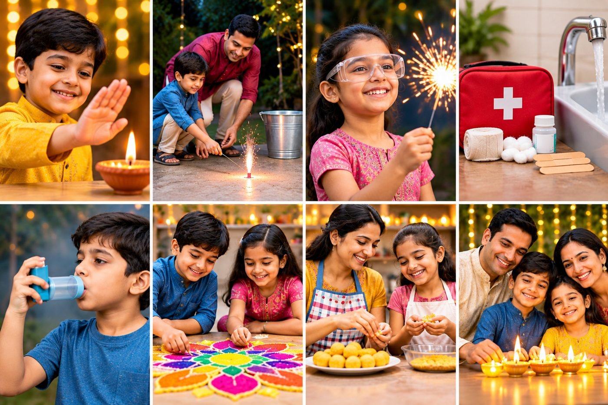
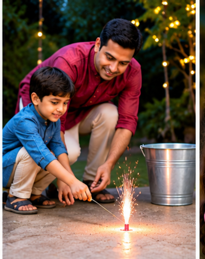
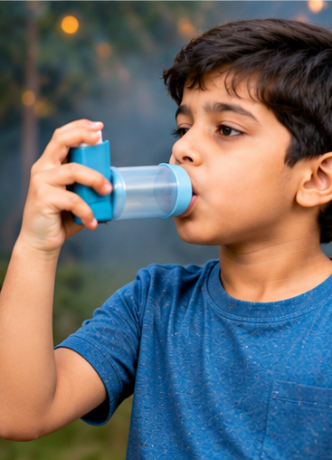
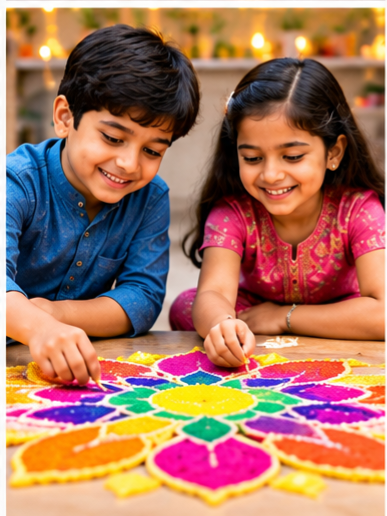
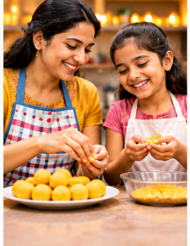

Safe Diwali for children: prevention and first aid for common injuriesसुरक्षित दिवाली: बच्चों की चोटों से बचाव और प्राथमिक उपचार
Diwali is joyful for children, but every year many are hurt by crackers, sparklers, diyas and hot oil. Most of these injuries can be prevented, and quick first aid makes a difference.दिवाली बच्चों के लिए खुशी का त्योहार है, पर हर साल पटाखों, फुलझड़ियों, दीयों और गर्म तेल से कई बच्चे घायल होते हैं। इनमें से ज़्यादातर चोटों से बचा जा सकता है, और तुरंत प्राथमिक उपचार बड़ा फर्क डालता है।

Go to the emergency department at onceतुरंत इमरजेंसी में जाएँ
Do not wait if your child has any of these. Call 112 or go to the nearest hospital emergency.इनमें से कोई भी लक्षण हो तो इंतज़ार न करें। 112 पर कॉल करें या नजदीकी अस्पताल की इमरजेंसी में जाएँ।
- Trouble breathing, or blue or grey lipsसांस लेने में तकलीफ, या नीले या स्लेटी होंठ
- Burns larger than the child's palm, or burns on the face, hands, feet, genitals or a jointबच्चे की हथेली से बड़ा जलना, या चेहरे, हाथ, पैर, जननांग या जोड़ पर जलना
- Any eye injuryआँख की कोई भी चोट
- Swallowing a battery or a small magnetबैटरी या छोटा चुंबक निगलना
- Severe pain, confusion, unusual drowsiness, or a fitतेज़ दर्द, भ्रम, असामान्य नींद, या दौरा
- Bleeding that does not stop, or a deep cutखून जो न रुके, या गहरा कट
1Common Diwali injuries in childrenदिवाली में बच्चों की आम चोटें
- Burns from crackers, sparklers, diyas, candles, hot oil and sweets. These are the most common.जलना पटाखों, फुलझड़ी, दीयों, मोमबत्ती, गर्म तेल और मिठाई से। यह सबसे आम चोट है।
- Eye injuries from flying sparks or bursting crackers.आँख में चोट उड़ती चिंगारी या फटते पटाखे से।
- Hand and finger injuries when a cracker explodes in the hand or is lit too early.हाथ और उंगलियों में चोट पटाखा हाथ में फटने या जल्दी जलाने से।
- Breathing trouble from smoke and pollution, which can bring on coughing, wheezing or an asthma attack.सांस की तकलीफ धुएँ और प्रदूषण से, जिससे खाँसी, घरघराहट या अस्थमा का दौरा आ सकता है।
- Swallowed objects, especially button batteries from decorations or toys.कोई चीज़ निगलना, खासकर सजावट या खिलौनों की बैटरी।
- Noise stress and poor sleep, particularly in toddlers and children with sensory sensitivity.शोर और नींद में खलल, खासकर छोटे और संवेदनशील बच्चों में।
2Prevention: before Diwaliबचाव: दिवाली से पहले
- Prepare a first-aid box: clean dressings, a bandage roll, plasters, cling film for burns, clean water or saline, and the medicines your doctor has prescribed, including your child's inhaler and spacer.फर्स्ट-एड बॉक्स तैयार रखें: साफ ड्रेसिंग, बैंडेज, प्लास्टर, जलने के लिए क्लिंग फिल्म, साफ पानी या सेलाइन, और डॉक्टर की बताई दवाइयाँ, जिसमें बच्चे का इनहेलर और स्पेसर शामिल हों।
- Save 112 and the nearest hospital's emergency number in your phone.अपने फ़ोन में 112 और नजदीकी अस्पताल की इमरजेंसी का नंबर सेव रखें।
- Choose an open firing spot, away from houses, dry leaves, parked vehicles, cooking gas and petrol.पटाखे चलाने के लिए खुली जगह चुनें, जो घरों, सूखी पत्तियों, खड़ी गाड़ियों, गैस और पेट्रोल से दूर हो।
- Keep a bucket of water and a bucket of sand ready at that spot before you start.शुरू करने से पहले उस जगह पर पानी और रेत की बाल्टी रखें।
- Store crackers in a closed box, away from heat, sunlight, lamps and children.पटाखे बंद डिब्बे में, गर्मी, धूप, दीये और बच्चों से दूर रखें।
- Talk to children the day before. Agree that only grown-ups will light crackers.एक दिन पहले बच्चों से बात करें। तय करें कि पटाखे केवल बड़े जलाएँगे।
3Prevention: while burstingबचाव: पटाखे चलाते समय
- Only adults light crackers. Adults should wear closed shoes near the firing area, not slippers or bare feet.पटाखे केवल बड़े जलाएँ। चलाने की जगह के पास बड़े बंद जूते पहनें, चप्पल या नंगे पैर नहीं।
- Tie back long hair. Keep loose sleeves, dupattas and scarves away from flames.लंबे बाल बाँधें। ढीली आस्तीन, दुपट्टा और स्कार्फ आग से दूर रखें।
- Light from arm's length, with a long stick or a candle, and step back straight away.हाथ की लंबाई की दूरी से, लंबी छड़ी या मोमबत्ती से जलाएँ, और तुरंत पीछे हट जाएँ।
- Never light a cracker in a pocket, a bottle or a tin, and never hold a burning cracker.पटाखा जेब, बोतल या डिब्बे में न जलाएँ, और जलते पटाखे को हाथ में न पकड़ें।
- Keep children well back, behind a wall or inside the house with a window open to watch.बच्चों को दूर रखें, दीवार के पीछे या घर के अंदर खिड़की खोलकर देखने दें।
- Sparklers stay hot long after they stop sparking. Hold them by the handle, not the wire end, and drop them into the bucket of water when finished.फुलझड़ी बुझने के बाद भी लंबे समय तक गर्म रहती है। उसे हैंडल से पकड़ें, तार वाले सिरे से नहीं, और खत्म होने पर बाल्टी के पानी में डाल दें।
- Never leave a burning cracker or a lit diya unattended.जलता पटाखा या जलता दीया कभी अकेला न छोड़ें।

4Prevention: around the houseबचाव: घर के अंदर
- Place diyas and candles on stable trays, away from curtains, bedding, paper decorations and where children can reach.दीये और मोमबत्ती मजबूत ट्रे पर रखें, जो परदों, बिस्तर, कागज की सजावट और बच्चों की पहुँच से दूर हो।
- Keep cooking oil, sweet pans and hot tea away from table edges. Oil splashes cause serious burns.खाने का तेल, मिठाई की कड़ाही और गर्म चाय टेबल के किनारे से दूर रखें। तेल के छींटों से गंभीर जलन होती है।
- Keep button batteries, small magnets and small decorations out of reach of children under five.पाँच साल से छोटे बच्चों की पहुँच से बैटरी, छोटे चुंबक और छोटी सजावट की चीज़ें दूर रखें।
- Collect unburnt or spent crackers and soak them in water. Do not let children pick them up.बिना जले या इस्तेमाल हुए पटाखे इकट्ठा करके पानी में भिगो दें। बच्चों को उन्हें उठाने न दें।
- When smoke is heavy, keep windows closed. Children with asthma should stay indoors during the loudest bursting and keep their inhaler with them.धुआँ ज़्यादा हो तो खिड़कियाँ बंद रखें। अस्थमा वाले बच्चे सबसे ज़्यादा पटाखों के समय घर के अंदर रहें और इनहेलर साथ रखें।
5Prevention: after burstingबचाव: पटाखे चलने के बाद
- Soak the spent crackers in water before throwing them away.इस्तेमाल हुए पटाखों को फेंकने से पहले पानी में भिगो दें।
- The next morning, check the firing area for any cracker that did not go off. Keep children away until it is clear.अगली सुबह चलाने की जगह देखें कि कोई पटाखा बिना फटा तो नहीं रह गया। साफ होने तक बच्चों को दूर रखें।
- Wash children's hands before they eat.बच्चों को खाने से पहले हाथ धुलवाएँ।
- Check every child for injuries, even minor ones. Watch for coughing, wheezing or breathing trouble for the next 24 hours.हर बच्चे को चोट के लिए जाँचें, छोटी चोट भी। अगले 24 घंटे तक खाँसी, घरघराहट या सांस की तकलीफ पर नज़र रखें।
6Green crackers are safer, not safeग्रीन पटाखे सुरक्षित हैं, पर खतरे से मुक्त नहीं
Green crackers produce less smoke and fewer harmful particles, so they may suit children with asthma or allergies better. But green crackers can still cause burns and injuries. The same precautions apply to them as to any cracker.ग्रीन पटाखों से कम धुआँ और कम हानिकारक कण निकलते हैं, इसलिए अस्थमा या एलर्जी वाले बच्चों के लिए ये बेहतर विकल्प हो सकते हैं। लेकिन ग्रीन पटाखों से भी जलने और चोट लगने का खतरा रहता है। इन पर भी वही सावधानियाँ लागू होती हैं जो किसी भी पटाखे पर।
7First aid for common Diwali injuriesआम चोटों के लिए प्राथमिक उपचार
Burnsजलना
- Cool the burn under running water for at least 20 minutes. If running water is not available, use cool water from a bucket or a clean wet cloth.जले हिस्से को कम से कम 20 मिनट तक ठंडे बहते पानी में रखें। बहता पानी न हो तो बाल्टी के ठंडे पानी या गीले साफ कपड़े का इस्तेमाल करें।
- Remove watches, bangles and tight clothing near the burn, unless they are stuck to the skin.जले के पास की घड़ी, चूड़ी और तंग कपड़े उतार दें, जब तक वे त्वचा से चिपके न हों।
- Cover loosely with cling film or a clean, non-fluffy cloth. Keep the child warm and calm.क्लिंग फिल्म या साफ, बिना रोएँ वाले कपड़े से हल्के से ढकें। बच्चे को गर्म और शांत रखें।
- Give pain relief only as your doctor has advised, based on your child's age and weight.दर्द की दवा केवल डॉक्टर की बताई मात्रा में, बच्चे की उम्र और वज़न के अनुसार दें।
- Do not apply ice, toothpaste, butter, ghee, oil, turmeric or any home remedy.बर्फ, टूथपेस्ट, मक्खन, घी, तेल, हल्दी या कोई घरेलू नुस्खा न लगाएँ।
- Do not burst blisters, or pull off clothing stuck to the burn. Do not put cotton wool directly on it, because the fibres stick.छाले न फोड़ें, जले पर चिपके कपड़े न खींचें। रुई सीधे जले पर न रखें, क्योंकि उसके रेशे चिपक जाते हैं।
Eye injuriesआँख में चोट
- Keep the child still and calm. Cover the eye loosely with a paper cup or clean shield, without pressing.बच्चे को शांत और स्थिर रखें। आँख को कागज के कप या साफ शील्ड से हल्के से ढकें, दबाएँ नहीं।
- If a chemical or powder has splashed into the eye, rinse gently with clean water for 15 to 20 minutes while you travel.अगर केमिकल या पाउडर आँख में गया हो, तो जाते समय 15 से 20 मिनट तक साफ पानी से धीरे-धीरे धोएँ।
- Take the child to an eye doctor or emergency department right away, even if the eye looks fine.आँख ठीक लगे तब भी बच्चे को तुरंत नेत्र विशेषज्ञ या इमरजेंसी में ले जाएँ।
- Do not rub the eye, press on it, try to remove anything stuck in it, or put drops or home remedies in it.आँख को रगड़ें नहीं, दबाएँ नहीं, उसमें फँसी चीज़ निकालने की कोशिश न करें, और कोई दवा या घरेलू नुस्खा न डालें।
Hand and finger injuriesहाथ और उंगली में चोट
- Press a clean cloth firmly on any bleeding for about 10 minutes. If it soaks through, add more cloth on top rather than lifting it.खून बहने वाली जगह पर साफ कपड़ा रखकर लगभग 10 मिनट तक दबाव दें। कपड़ा भीगे तो हटाने के बजाय ऊपर से और कपड़ा रखें।
- Raise the hand above heart level while you press. Cover small cuts with a clean dressing.दबाव देते समय हाथ को दिल की ऊँचाई से ऊपर रखें। छोटे कट को साफ ड्रेसिंग से ढकें।
- If part of a finger is cut off, wrap the piece in clean cloth, seal it in a bag, keep it cool (not directly on ice), and take it to hospital with the child.उंगली का कोई हिस्सा कट गया हो, तो उसे साफ कपड़े में लपेटें, सील बैग में रखें, ठंडा रखें (सीधे बर्फ पर नहीं), और बच्चे के साथ अस्पताल ले जाएँ।
- If a bone may be broken, support the limb in the position you find it and pad it. Do not try to straighten it.हड्डी टूटने का शक हो तो हाथ को जिस हालत में है उसी में सहारा दें और गद्दी लगाएँ। सीधा करने की कोशिश न करें।
- Do not remove anything embedded in a wound, or wash a deep wound again and again.घाव में फँसी चीज़ न निकालें, और गहरे घाव को बार-बार न धोएँ।
Swallowed battery or magnetबैटरी या चुंबक निगलना
- Go to the emergency department right away. Note the time and the object's type, and take the packet or battery if you have it.तुरंत इमरजेंसी में जाएँ। समय और चीज़ का प्रकार नोट करें, और पैकेट या बैटरी मिले तो साथ ले जाएँ।
- Do not make the child vomit, and do not wait for symptoms. A button battery can burn the food pipe within hours, even when the child looks well.उल्टी न कराएँ, और लक्षणों का इंतज़ार न करें। बटन बैटरी कुछ ही घंटों में खाने की नली को जला सकती है, भले ही बच्चा ठीक दिखे।
Breathing difficulty from smoke or asthmaधुएँ या अस्थमा से सांस लेने में दिक्कत
- Move the child to fresh air, away from smoke. Help them sit upright and loosen tight clothing.बच्चे को धुएँ से दूर, खुली हवा में ले जाएँ। उसे सीधा बिठाएँ और तंग कपड़े ढीले करें।
- Give the reliever inhaler exactly as your doctor has prescribed, with a spacer if one is prescribed. Follow your child's written asthma plan for repeat doses.रिलीवर इनहेलर ठीक उतनी ही मात्रा में दें जितनी डॉक्टर ने बताई है, स्पेसर बताया गया हो तो उसके साथ। बार-बार की खुराक के लिए बच्चे का लिखित अस्थमा प्लान मानें।
- Stay with the child and keep them calm.बच्चे के साथ रहें और उसे शांत रखें।
- Do not leave the child alone, or lay them flat if they are struggling to breathe.बच्चे को अकेला न छोड़ें, और सांस में दिक्कत हो तो उसे लिटाएँ नहीं।
Call 112 if the lips or face look blue or grey, the child cannot speak in full sentences, the chest pulls in between the ribs, breathing does not improve after the inhaler, or the child is drowsy.होंठ या चेहरा नीला या स्लेटी दिखे, बच्चा पूरे वाक्य न बोल पाए, पसलियों के बीच छाती खिंचे, इनहेलर के बाद सांस न सुधरे, या बच्चा नींद में लगे तो 112 पर कॉल करें।
Other things to watch forइन बातों पर भी नज़र रखें
- Fainting:बेहोशी: lay the child flat with the legs raised, and check that breathing is normal.बच्चे को पैर ऊपर करके लिटाएँ, और देखें कि सांस सामान्य है।
- Fit or seizure:दौरा (फिट): place the child on their side, clear the space around them, and put nothing in their mouth. Call 112 and note how long it lasts.बच्चे को करवट पर लिटाएँ, आसपास की जगह खाली करें, और मुँह में कुछ न डालें। 112 पर कॉल करें और देखें कि दौरा कितनी देर चला।
- Head injury after a fall:गिरने के बाद सिर में चोट: go to the emergency department if there is vomiting, drowsiness, confusion or a fit.उल्टी, नींद, भ्रम या दौरा हो तो इमरजेंसी में जाएँ।
When you go to hospital, take the child's age and weight if you know them, any medicines they take, and a clear account of what happened and when.अस्पताल जाते समय बच्चे की उम्र और वज़न (पता हो तो), जो दवाइयाँ वह लेता है, और क्या हुआ और कब हुआ, यह साफ बताने के लिए तैयार रखें।

8Enjoying Diwali safelyसुरक्षित मज़ा कैसे लें
- Rangoli with colour powder or flowers. Let the children design it, with an adult nearby.रंगोली रंग-बिरंगे पाउडर या फूलों से। बच्चे खुद डिज़ाइन बनाएँ, पास में बड़ा हो।
- Safe sweet-making. Children can help garnish and shape while an adult handles the stove and hot oil.मिठाई बनाना। बच्चे सजाने और आकार देने में मदद करें, गैस और गर्म तेल बड़े संभालें।
- LED lights and electric diyas in place of open flames, especially in homes with toddlers.LED लाइट और बिजली के दीये खुली लौ की जगह, खासकर छोटे बच्चों वाले घरों में।
- Paper lanterns and greeting cards for relatives, made together as a family.कागज़ की लालटेन और ग्रीटिंग कार्ड रिश्तेदारों के लिए, परिवार के साथ मिलकर बनाएँ।
- A safety checklist the child can tick off, which turns the rules into a game.सुरक्षा चेकलिस्ट जिसे बच्चा टिक कर सके। नियम खेल बन जाएँगे।
- Storytelling about the meaning of Diwali during the evening puja.कहानियाँ पूजा के समय दिवाली का अर्थ और कहानियाँ सुनाएँ।


9Delhi-NCR rules for Diwali 2026दिल्ली-NCR में दिवाली 2026 के नियम
- Certified green crackers can be bought from licensed sellers from 4 to 6 November.प्रमाणित ग्रीन पटाखे लाइसेंसधारी विक्रेताओं से 4 से 6 नवंबर तक खरीदे जा सकते हैं।
- Bursting is allowed only on 7 and 8 November, between 6 am and 7 am and between 8 pm and 10 pm.चलाने की अनुमति केवल 7 और 8 नवंबर को है, और सिर्फ सुबह 6 से 7 बजे और शाम 8 से 10 बजे के बीच।
- No bursting within 300 metres of hospitals, nursing homes, health centres, old-age homes, schools and silence zones.अस्पताल, नर्सिंग होम, स्वास्थ्य केंद्र, वृद्धाश्रम, स्कूल-कॉलेज और शांति क्षेत्र (साइलेंस ज़ोन) के 300 मीटर के दायरे में पटाखे चलाना मना है।
- The complete ban returns from 9 November.9 नवंबर से पूरा प्रतिबंध फिर से लागू होगा।
Buy only from licensed sellers, and check the CSIR-NEERI green logo and QR code on the pack. Do not buy loose or unlabelled crackers. Crackers containing barium, and joined crackers ("ladis") or garlands, are not allowed.केवल लाइसेंसधारी विक्रेता से खरीदें और पैकेट पर CSIR-NEERI ग्रीन लोगो और QR कोड जाँचें। खुले या बिना लेबल वाले पटाखे न खरीदें। बेरियम वाले पटाखे, और जुड़े हुए पटाखे (लड़ी या माला) प्रतिबंधित हैं।
Please read.कृपया ध्यान दें। These dates and timings are based on the Supreme Court's order of 2 November 2026, as reported by SCC Online and other news sources. Check the latest notice from the Delhi government or the Delhi Pollution Control Committee before you burst crackers, since rules can change. This information is for general education and is not a substitute for a consultation with a doctor. Photos are illustrative only.ये तारीखें और समय सुप्रीम कोर्ट के 2 नवंबर 2026 के आदेश पर आधारित हैं, जैसा SCC Online सहित कई समाचार स्रोतों में रिपोर्ट हुआ है। पटाखे चलाने से पहले दिल्ली सरकार या दिल्ली प्रदूषण नियंत्रण समिति की ताज़ा सूचना अवश्य देखें, क्योंकि नियम बदल सकते हैं। यह जानकारी केवल सामान्य शिक्षा के लिए है और डॉक्टर से परामर्श का विकल्प नहीं है। तस्वीरें केवल उदाहरण के लिए हैं।